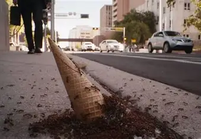

Series creadas por Vince Gilligan
Breaking Bad
Descripción
Esta serie narra la historia de Walter White, un profesor de química de 50 años diágnosticado con cáncer de pulmón, este piensa que no tiene nada que perder, por lo que para pagar su tratamiento y asegurar un buen futuro para su familia, utiliza sus destrezas en la química para cocinar y vender metanfetamina junto a Jesse Pinkman.
Características
- Género: Drama Criminal
- 5 temporadas y 62 episodios
- Se desarrolla en Albuquerque
Datos Curiosos
- Al inicio cuestionaron a Vince por querer tomar a Bryan Cranston como protagonista, ya que lo solían ver como un personaje torpe y divertido, debido a la serie de Malcolm in the Middle, sin embargo este acabó realizando una excelente actuación.
- El episodio 14 de la temporada 5 llamado "Ozymandias" obtuvo y mantuvo una calificación perfecta (10/10) durante 13 años en la plataforma de IMDb.
- La serie presta atención a detalles muy pequeños pero importantes, como por ejemplo:
- El episodio final es titulado "Felina", ya que es un anagrama de la palabra "Finale", además de que incluye 3 elementos químicos con un impacto importante en la serie:
- Fe (Hierro en la sangre).
- Li (Litio en la metanfetamina).
- Na (Sodio en las lágrimas).
- La serie tiene 62 epidodios, y el elemento #62 de la tabla periódica es el samario, el cual es utilizado para tratar el cáncer.
- El episodio "Ozymandias" hace referencia a un poema, que narra la caída de un rey poderoso y la inevitable decadencia del poder, lo que es similar a lo que sucede en el capítulo.

Better Call Saul!
Descripción
Esta serie es un spin-off de Breaking Bad, a su vez es una precuela, y secuela en sus últimos 4 capítulos, en esta serie se narra la historia de Jimmy McGill, quien solía ser estafador en su juventud, pero gracias a la necesidad de hacer que su hermano se sintiese orgulloso de él, se convierte en abogado, el declive moral lo lleva a convertirse en "Saul Goodman", o mejor conocido como el abogado criminal.
Características
- Género: Drama Criminal
- 6 temporadas y 63 episodios
- Se desarrolla en Albuquerque
Datos Curiosos
- Al inicio cuestionaron si realizar la serie o no, ya que Saul Goodman era un persona increíble en Breaking Bad, sin embargo, realizar una una serie de "abogados" se veía poco prometedor, en base a las expectativas generadas por Breaking Bad.
- La serie a diferencia de Breaking Bad, se enfoca más en dar transfondo a los personajes de la serie, haciendo un balance entre la historia de Jimmy, y la historia del cartel de los Salamancas, incluyendo a Gustavo Fring.
- La serie presta atención a detalles muy pequeños pero importantes, como por ejemplo:
- En el episodio "The guy for this", se ve como Jimmy deja caer un cono, el cual posteriormente es devorado por hormigas, lo que puede ser interpretado como una metafora, siendo Jimmy el cono y las hormigas los negocios ilegales.
- La serie brinda un punto de vista muy diferente al que se tenía en Breaking Bad, e impacta mucho en la misma, por lo que volver a ver Breaking Bad luego de Better Call Saul permitirá al usuario entender de mejor manera el porqué sucedían ciertas cosas, además de comprender de manera más profunda el personaje de Saul Goodman.
- Al igual que en Breaking Bad, en esta serie se tocan mucho temas de poder, y la decadencia del mismo, donde el protagonista se mantiene entre el bien y el mal a lo largo de la serie "aumentando" su poder.


Resumen
Ambas series tocan temas muy importantes, como el riesgo del poder, las consecuencias de nuestras acciones, personajes muy interesantes y una actuación impecable, ambas son series lentas pero tomando el cuenta el detalle y la actuación, vale completamente la pena darles una oportunidad.